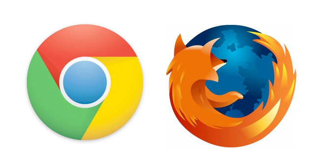
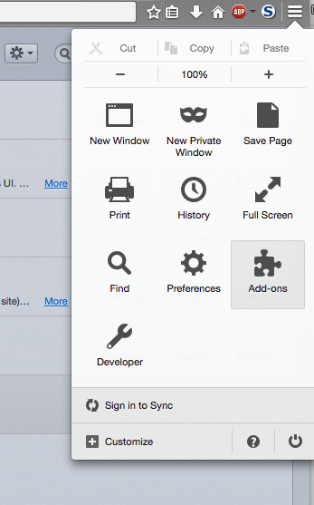
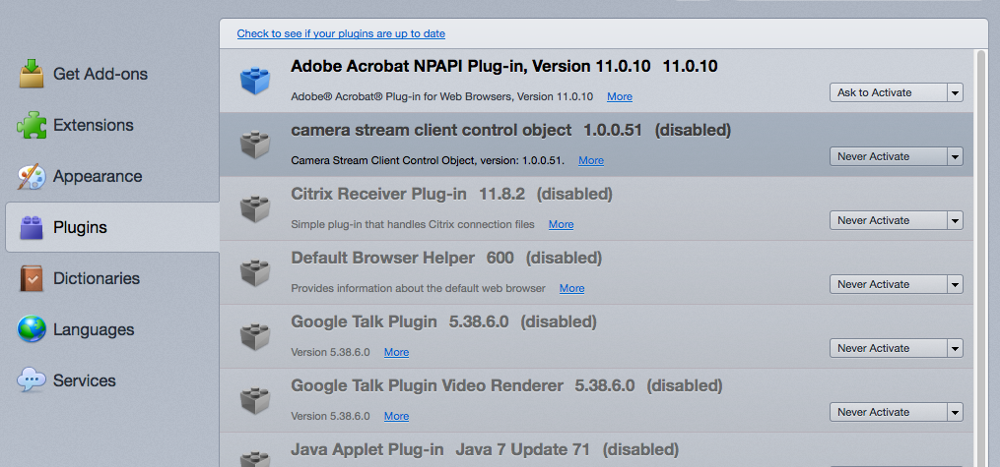
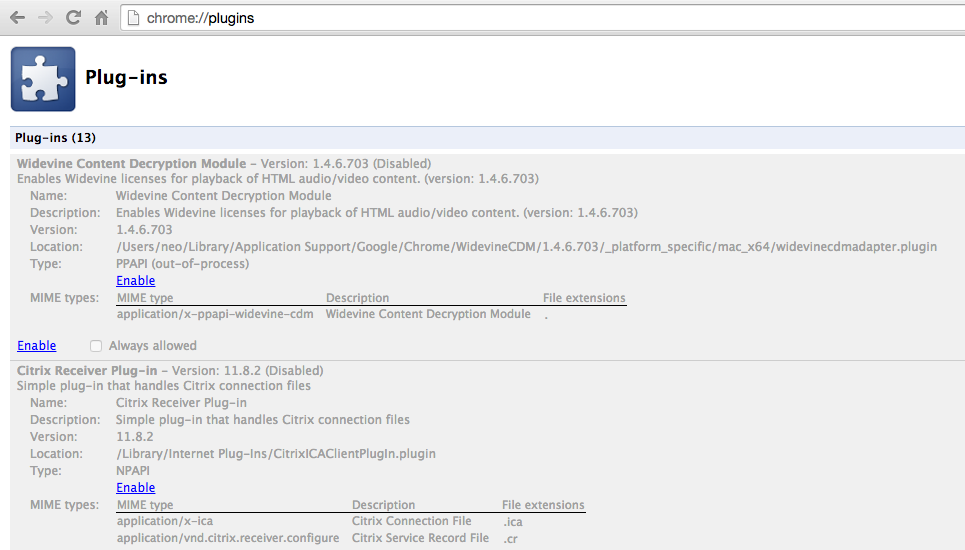
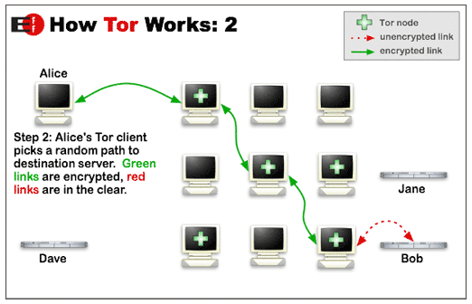
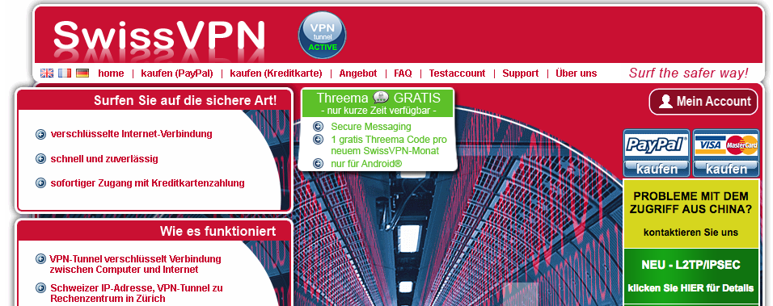

Web Surfing
We divided this section into two chapters that go hand in hand. To ensure that private communciation isn't compromised it is vital to harden your web browser to provide a required level of security. This requires some modifications and extensions.
Don't worry. This is easier than it sounds.
Secure Web Surfing
Browser Choice
Considering privacy concerns and due to its open source code we prefer Mozilla Firefox but regard Google Chrome as the most secure web browser. Both browsers are much more secure and flexible than Internet Explorer and Safari. Choose the one you like.

The most important step is to strip the browser plugins down to a minimal set and install some usefull extensions. This is easier than it sounds.
Plugins / Addons
Browsers integrate a lot of plugins that are provided by locally installed software like Adobe Acrobat Reader or Java. While surfing the web, all these plugins are offered to embedded objects in websites and run whenever an object requires it. If one of these software products is out-of-date and has relevant security issues, an attacker is able to exploit the weaknesses by placing specially crafted objects in web pages. (so called Drive-by-Download attacks)
The best way to avoid these attacks is to disable the browser plugins. Some of the vulnerabilities in plugins installed on your system may not even be known today and are already exploited by government agencies and other criminals to get access to your system.
You can check the current status of your browser plugins via the following links.
Plugin Checks
- Mozilla Browser Plugin Check (works with all browsers)
- Qualys Browser Check (requires privilege to install extension)
Effect of Disabled Plugins
The most often phrased question is "What will I lose by disbaling the plugins?". The answer is "Not much.". What happens is that files like Microsoft Word documents or PDF documents will show up as download and will not be seamlessly integrated in the web page. Other plugins that you know like "Java" or "Flash" will ask to be activated evrytime you need them. We don't regard this as high costs considering the high level of security that you gain by these changes.
Mozilla Firefox
Disable plugins in Firefox is easy as pie. Access the plugin setup via "Menu Button" > Addons > Plugins.
Disable all plugins by default and select the the option "Ask to activate" for the ones that sound fimiliar to you.


Google Chrome
In Google Chrome access the plugin page by typing chrome://plugins in the URL bar.
Disable all plugins except the one called "Native Client" and "Adobe Flash Player" (if you still want to be able to watch YouTube videos on that system). (Note: The flash player called PepperFlashPlayer is the one that ships with Google Chrome. Enable this one if you have the choice as it receives updates more frequently.)

Further Help
If you need more help, visit this Tutorial Page.
Useful Extensions
Mozilla Firefox
- NoScript - Controls active content in web pages like JavaScript and embedded objects
- AdBlock Plus - Blocks unwanted ads in websites
- HTTPS Everywhere - Ensures that SSL encryption is applied on webpages that offer it (prevents MITM attacks)
- Cookies Manager+ - Control the tracking cookies (see PRISM project for more details)
Chrome
- ScriptSafe - Controls active content in web pages like JavaScript and embedded objects
- AdBlock - Blocks unwanted ads in websites
- KB SSL Enforcer - Ensures that SSL encryption is applied on webpages that offer it (prevents MITM attacks)
- Vanilla Cookie Manager - Control the tracking cookies (see PRISM project for more details)
Private Web Browsing
Tor Network
The Tor software provides free access to a worldwird and community driven privacy network. The leaked documents from the NSA statet that Tor has not yet been compromised and is regarded as a real pain in the ass of the NSA spies.
The Tor project is also aware that the browser's security level defines the security level of the privacy functions provided by the Tor network. So they started to offer a bundle including a secure version of the Firefox browser to provide a fresh and uncompromised basis. Unfortunately network performance is not always good as botnets and file sharing users tend to drain the overall transfer rate. Another downside is that criminal organisations provide exit nodes that can see all unencrypted network traffic - so make sure that you don't use unencrypted services while using Tor.
Screenshots
 Above: How Tor works (source: eff)
Download
Available on the Tor website
Price: Free
Information
For information visit torproject.org
VPN Services
VPN service providers offer a secure and private tunnel to one of their servers in different locations around the world. You pay for this service and get instructions to setup the VPN tunnel to the services of the provider. After establishing the VPN tunnel all your traffic will be encrypted and sent to the remote VPN server. All you connections to remote services will appear as if they originate from this VPN server.
A downside is that you have to ensure your browser's security by the recommendations listed here on this page. Prices for the services are low but not free.
Screenshots
 Above: SwissVPN Website (source: SwissVPN.net)
Service Providers Overview
| Name | Price/Month | Payment Options | Location | Speed | Comment |
|---|---|---|---|---|---|
| SwissVPN | 6 CHF | paypal, credit cards | Switzerland | very good | |
| VPNTUNNEL.SE | 3 EUR | paypal, credit cards | various | good | |
| IBVPN | 2.15 USD | paypal, credit cards | various | ? | |
| AirVPN | 4 EUR | paypal, credit cards, bitcoin | various | ? | operated by activists and hacktivists in defence of net neutrality, privacy and against censorship. |
| Relakks | 3.75 EUR/ | paypal, credit cards | various | ? | Based in Sweden and launched in co-operation with the Swedish Pirate Party in 2006. |
| Perfect Privacy | 4 EUR | paypal, credit cards, various including bitcoin | various | ? | |
| TrilightZone | 6.60 EUR | paypal, credit cards, various including bitcoin | various | ? | VPN, secure shells, and many other services (for Professionals) |
Comparison
| Option | Advantages | Disadvantages |
|---|---|---|
| Tor | bundled with secure browser, free, known to be a problem for the NSA | slow, exit nodes may be compromised |
| VPN Service | fast, exit node is trustworthy | not for free, browser must be secured manually |